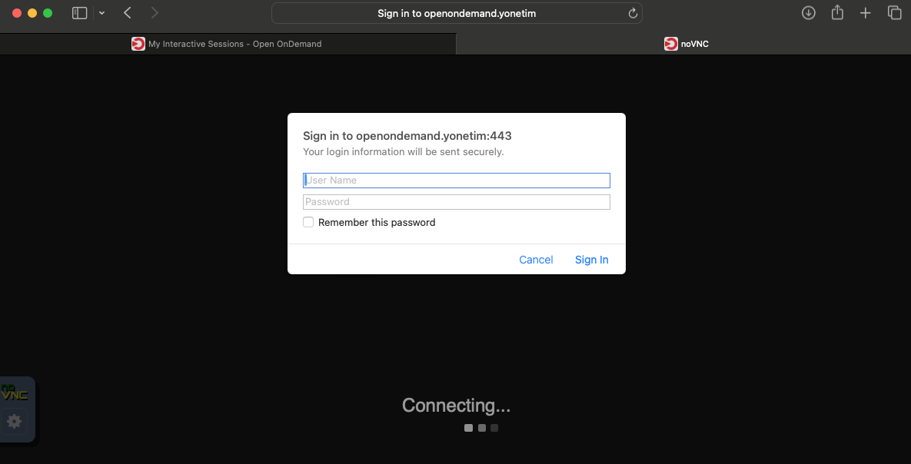
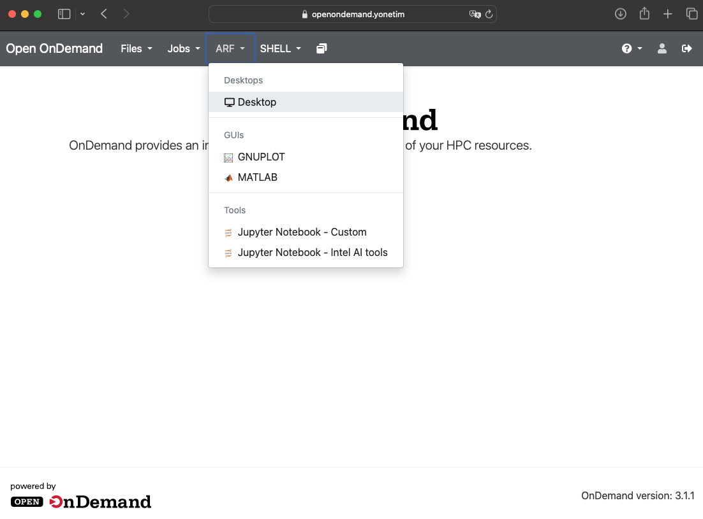
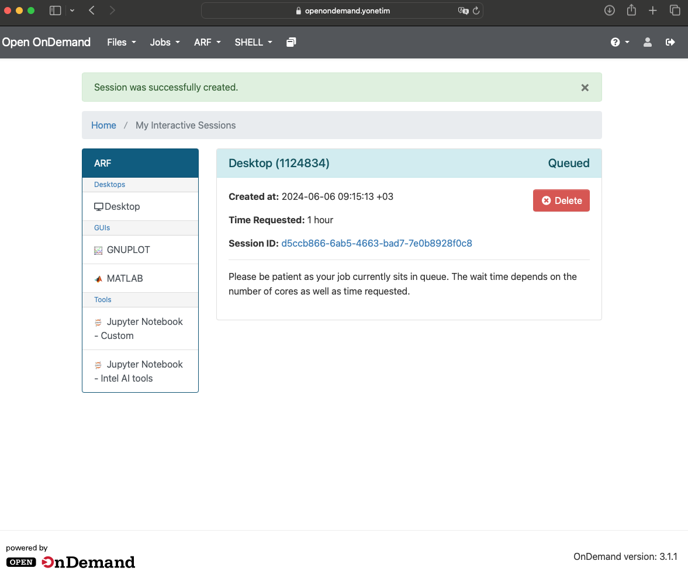
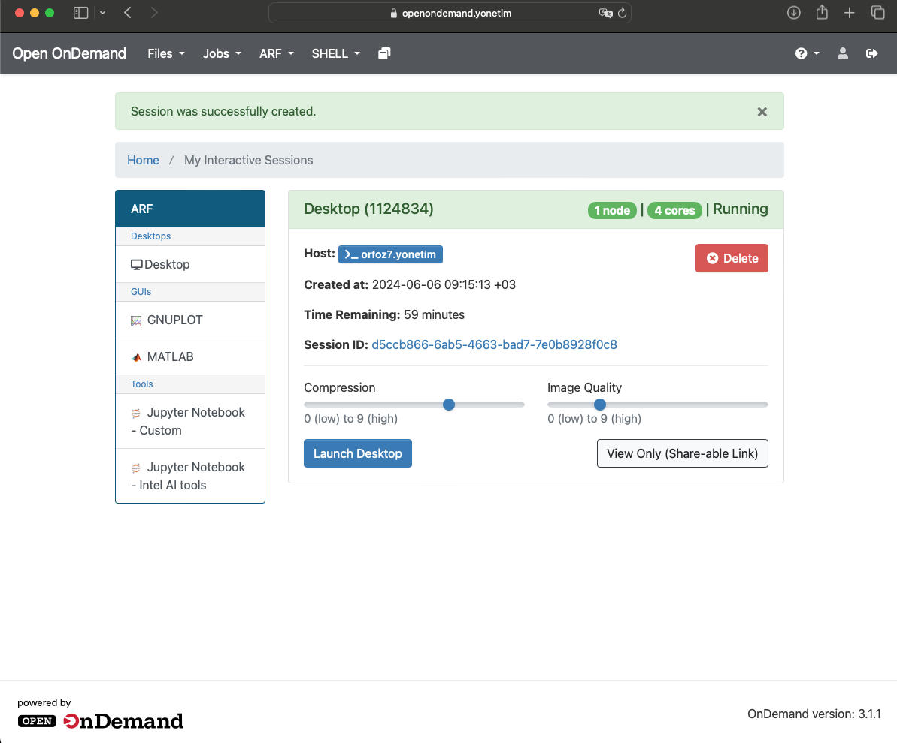
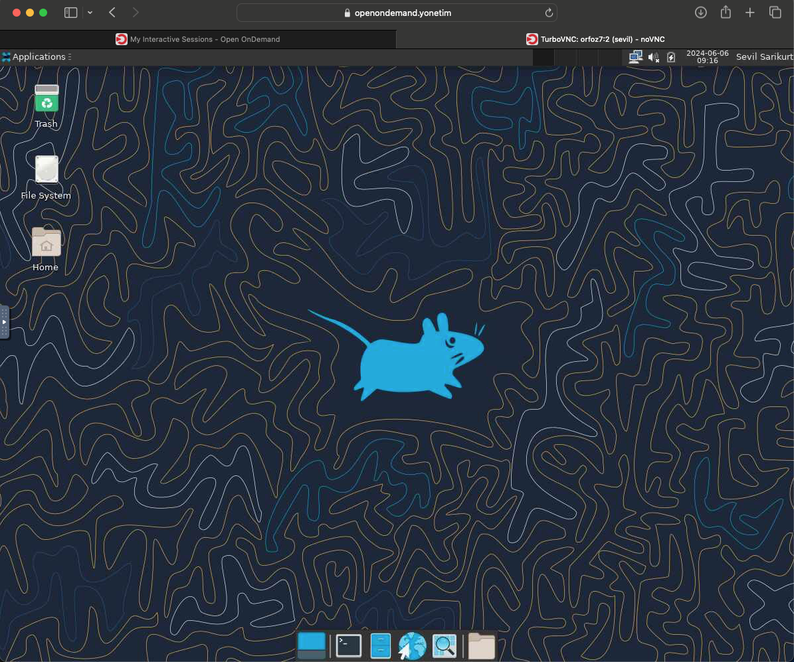
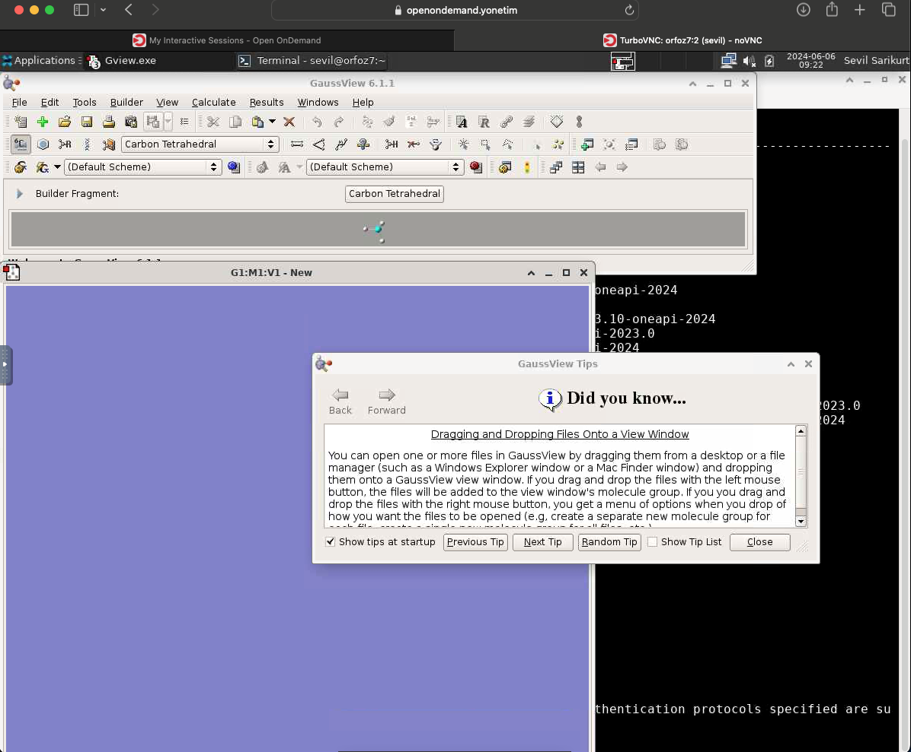
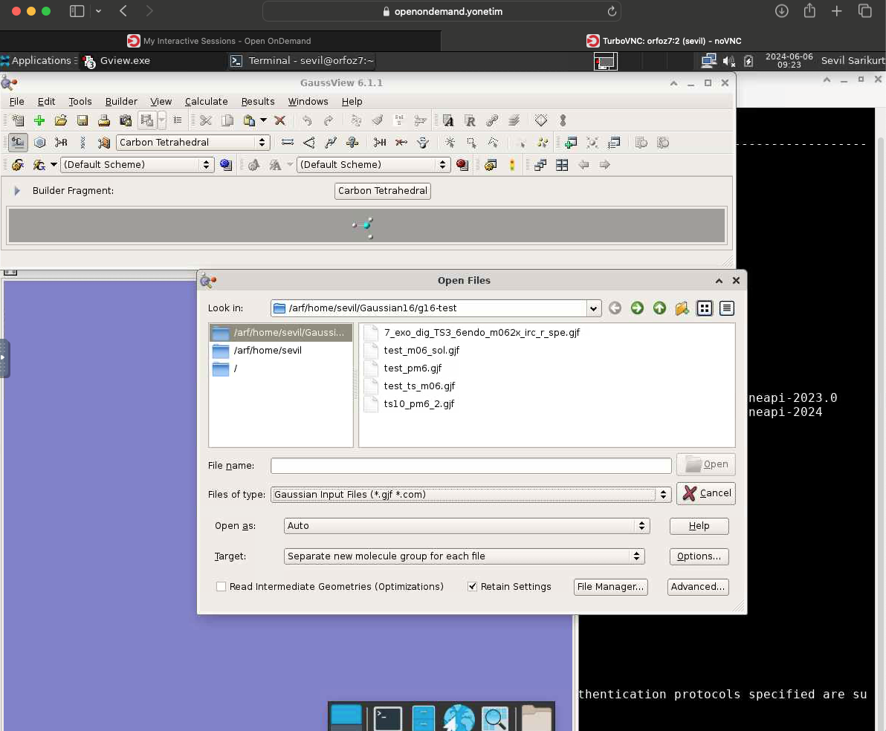

ARF Hesaplama Kümesinde GaussView 6 Programının Kullanılması#
Kimyasal modelleme ve hesaplamalı kimya çalışmalarını kolaylaştırmak amacıyla tasarlanmış olan GaussView, kullanıcıların kompleks moleküler yapıların oluşturulması, görselleştirilmesi ve Gaussian hesaplamalarının yönetilmesi süreçlerinde büyük kolaylık sağlar.
GaussView 6, Gaussian 16 yazılımı için mevcut olan en gelişmiş ve güçlü grafik arayüzüdür. Gaussian 16’da bulunan tüm yeni modelleme yöntemleri ve yetenekleri için tam destek sağlar.
GaussView’in sayfasından program ve de kullanımı hakkında detaylı bilgilere ulaşabilirsiniz.
ARF kümesinde Open OnDemand servisi (http://172.16.6.20) üzerinden GaussView 6 paketini kullanabilirsiniz. Open OnDemand web tabanlı bir kullanıcı arayüzü servisidir. Bu arayüz, terminal tabanlı klasik kullanıcı arayüzü sunucusunun sağladığı tüm imkanlara ek olarak kullanıcılara pek çok ek özellik sunmaktadır.
ARF kümesine erişim ve de Open OnDemand servisini kullanmak için TRUBA VPN bağlantısının başarılı bir şekilde sağlanmış olması gerekmektedir.
TRUBA VPN ile ilgili bilgilere ulaşmak için OpenVPN Bağlantısı sayfasını inceleyebilirsiniz.
ARF kümesine bağlantı için ARF Kullanıcı Arayüzüne Bağlantı sayfasını inceleyebilirsiniz.
ARF kümesi Open OnDemand servisine internet tarayıcınızı kullanarak http://172.16.6.20 adresinden ulaşabilirsiniz. Karşınıza gelen ekranda TRUBA kullanıcı adı ve şifre bilginizi girmeniz gerekmektedir.
Kullanıcı adı ve şifre bilginizi girdikten sonra ARF menüsünden Desktop seçeneğine tıklayınız.
Bundan sonraki adımda interaktif masaüstü talebinde bulunmanız gerekmektedir. Karşınıza gelen ekranda “Launch” sekmesine tıklayarak interaktif masaüstü için kaynak talebinde bulununuz.
Eğer GaussView 6 üzerinde yapacağınız işlemin (pre-process/post-process) 1 saatten fazla olacağını öngörüyorsanız süre bilgisini değiştiriniz.
Eğer sistemde tanımlı olan proje hesabınız üzerinden işlemlerinizi yapmak istiyorsanız Account kısmına proje hesabınızı (tbagXXX) belirtiniz.
İnteraktif masaüstü talebinde bulunduktan sonra ilgili kaynağın sizin için ayrılması için bir süre beklemeniz gerekecektir.
Kaynak talebiniz sistem tarafından karşılandığında aşağıdaki ekran karşınıza gelecektir. “Launch Desktop” butonuna tıklayarak devam edebilirsiniz.
İnteraktif masaüstü oturumunuz aşağıdaki ekranda olduğu gibi sizi karşılayacaktır. GausView programınız çalıştırabilmeniz için ilgili modülleri yüklemeniz gerekmektedir. Bu işlemi yapabilmek için aktif durumdaki interaktif masaüstü oturumunda terminal açmalısınız. Altta ortada yer alan menüden terminal ikonuna basarak terminal başlatabilirsiniz.
Açılan terminali tam ekran yapabilirsiniz. Terminalde Gaussian ile ilgili modülleri listeleyebilmek için
module available
komutunu yazınız. İlgili programlar arasında Gaussian için aşağıdaki modüllerin de listelendiğini göreceksiniz:
apps/gaussian/g16-avx
apps/gaussian/g16-avx2
apps/gaussian/g16-legacy
apps/gaussian/g16-sse4.2
apps/gaussian/gview
İlgili modüller arasından aşağıdaki modülleri yükleyiniz:
module load apps/gaussian/g16-avx
module load apps/gaussian/gview
Terminalde
gview.sh
komutunu yazdığınızda GaussView 6 açılmaya başlayacaktır.
Açılan GaussView 6 ekranından /arf/home/kullaniciadi dizininizde yer alan Gaussian input, output dosyalarını açıp analizlerinizi gerçekleştirebilir, yapılarınızı oluşturabilirsiniz.
Eğer çalışma dosyalarınız /truba/home/kullaniciadi veya /truba/scratch/kullaniciadi dizinlerinde yer alıyorsa ilgili çalışma dizinlerinizi arf-ui1 veya arf-ui2 kullanıcı arayüzünde iken TRUBA dizininizden ARF dizininize kopyalamanız gerekmektedir. Ayrıntılı bilgi için arf-truba-aktarim sayfasındaki bilgileri inceleyebilirsiniz.


{kind=link}
{kind=link}
{kind=link}
{kind=link}
{kind=link}
{kind=link}
{kind=link}
{kind=link}
{kind=link}